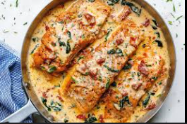

Tuscan Salmon
⭐⭐⭐⭐⭐
4.7 (180 reviews)

Ingredients
4 salmon fillets
Salt and pepper to taste
2 tablespoons olive oil
3 cloves garlic, minced
1/2 cup heavy cream
1/4 cup chicken broth
1/2 cup sun-dried tomatoes, chopped
1/4 cup grated Parmesan cheese
2 cups fresh spinach
1 tablespoon fresh basil, chopped
Directions
Season salmon fillets with salt and pepper on both sides.
Heat olive oil in a large skillet over medium heat. Cook salmon until golden on each side, about 4-5 minutes per side. Remove and set aside.
In the same skillet, add minced garlic and sauté until fragrant.
Pour in heavy cream and chicken broth, stirring to combine.
Add sun-dried tomatoes and Parmesan cheese, and let the sauce simmer until slightly thickened.
Stir in spinach and cook until wilted.
Return salmon to the skillet, spooning the sauce over the top. Cook until the salmon is heated through.
Garnish with fresh basil before serving.
Nutrition Facts
Calories: 600 | Protein: 40g | Carbs: 8g | Fat: 45g